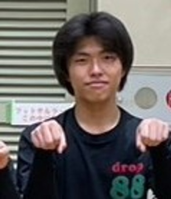
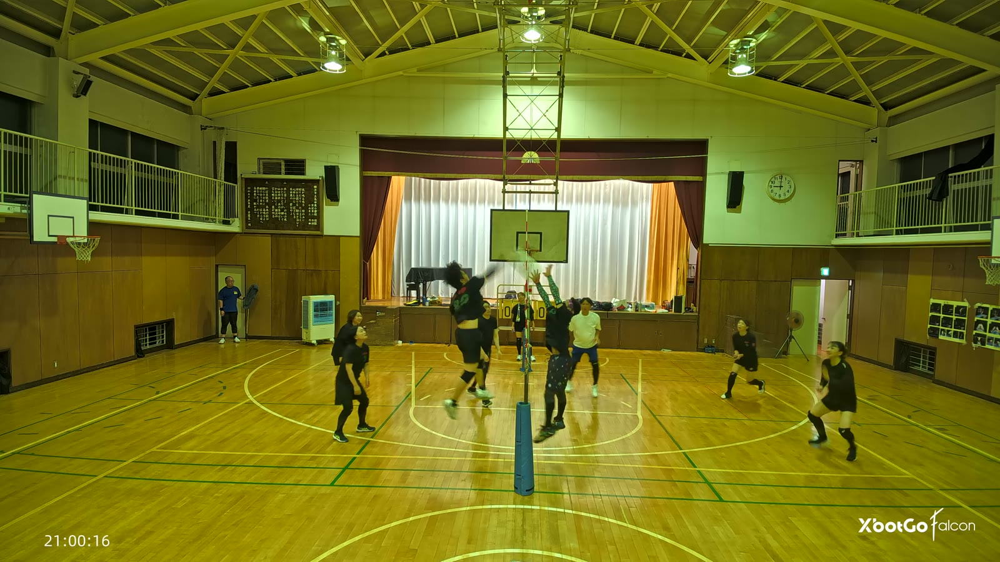
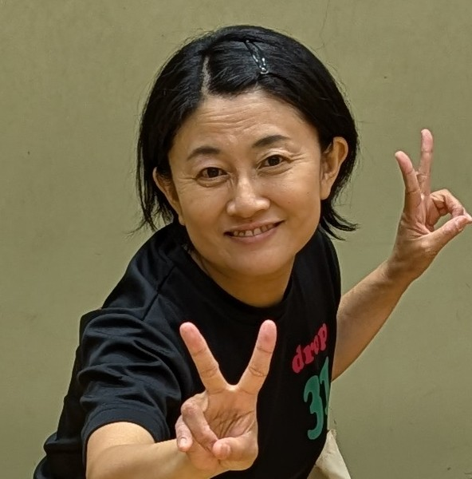
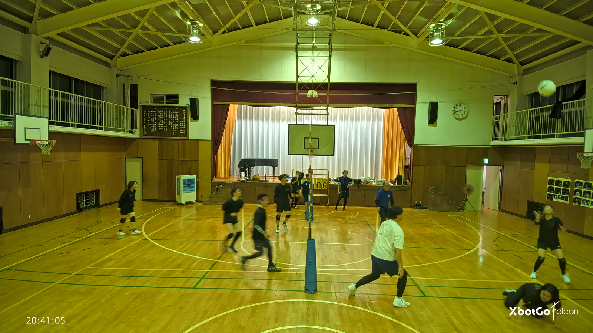
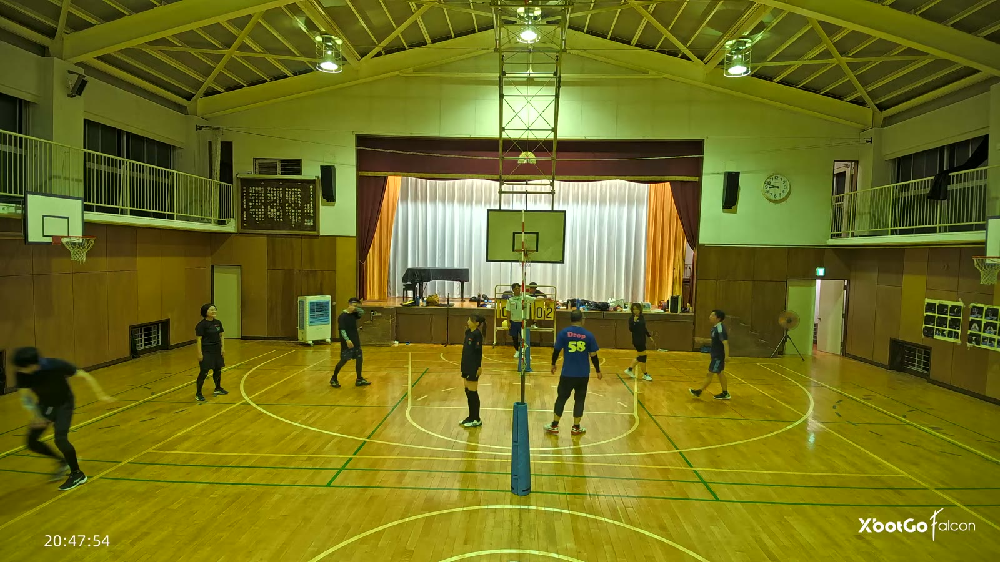
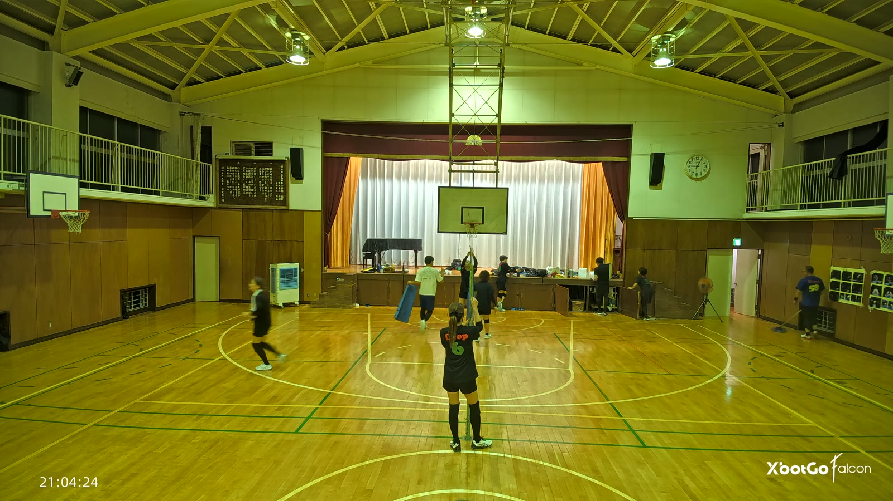

これは詳しい版です。時刻・回数・根拠がすべて入っています。結論だけ知りたい方は 要約のページへどうぞ。
この講評の前提を先に断っておきます。
2026年7月18日(土)、19:55:14 から 21:04:53 過ぎまでのおよそ1時間9分39秒。カメラはXBotGoの固定撮影(ボール追尾はオフ)で、7月4日よりカメラがやや後ろにあるぶん人物は小さく写ります。この日は163区間が切り出されており、今回はそのうち7つの時間帯・86区間を観察しました。
得点板はステージ脇の黄色いフリップ式(手めくり式)で、この日は少なくとも4回、0-0からのリセットが確認できています。練習の中で複数のミニゲーム・ドリルが入れ替わっており、電光表示ではなく手めくりの板であるぶん、選手や得点係の体で片側の数字が隠れる区間が多くありました。分かっている範囲で、この日の流れを次のように読みました。
| 時間帯 | 内容 | 手がかり |
|---|---|---|
| 19:55:14〜20:00:25 | 開始・アップ(今回は未観察) | - |
| 20:00:25〜20:05:21 | アップ/ドリルとみられる時間帯 | 得点板が両側そろって08→10→11→13→14→15と増える(連続本数のカウンターの可能性) |
| 20:05:21〜20:25:50 | (今回は未観察) | - |
| 20:25:50〜20:30:17 | ネット際の少人数ドリル(パス・トス回し) | 片側だけの数字が00→04→08と増える。「フォーゲルと一緒にあげてみてください」等の反復メニューの掛け声 |
| 20:30:47ごろ | 「1回目の試合です」の掛け声 | 音声(担当区間の直後) |
| 20:30:17〜20:36:08 | (今回は未観察) | - |
| 20:36:08〜20:40:14 | 少人数の得点制ミニゲーム | 得点板 02:00 → 08:05 と進む |
| 20:40:20〜20:44:50 | 同ミニゲーム続き。20:41:05、ゆりこのダイビングレシーブ(守りの賞) | 得点板 09-?5 → 10-06 → 10-07 → 12-08 と進む |
| 20:44:50〜20:45:49 | (今回は未観察) | - |
| 20:45:49〜20:50:20 | 「2分の1の試合です」の宣言で始まるミニゲーム。20:47:53ごろ、うっちーの珍プレー | 得点板 00-00 → 0?-07 と進み、右コートが優位に進める |
| 20:50:20〜20:55:55 | (今回は未観察) | - |
| 20:55:55〜21:00:21 | 試合。63:06(20:58:20ごろ)「お疲れさまでした」の掛け合いで一区切り | 得点板 00-00 → 04-08 と進む |
| 21:00:29〜21:04:54 | 新しいセット。21:00:08ごろ、るきのスパイクに50秒近い歓声(MVP)、21:00:16得点 | 得点板 0-0 → 08-14 と進む |
| 21:04:36〜21:04:53 | 練習終了・片づけ(ゆきよ・やまさん) | ネットのクランク操作・床のモップがけ |
| 21:04:53過ぎ | 動画終了 | 締めのナレーションと重なる |
なお、機械的に測った「盛り上がり度」のこの日の最高値(100)は動画内57:40〜58:45(実時刻20:52:54〜20:53:59)の区間に付いていますが、この時間帯は今回の7つの観察範囲に含まれておらず、中身がまだ分かっていません。55:06〜60:41のあいだ全体が今回は未観察のまま残っています。「盛り上がり度が高い=良いプレー」とは限らないことは6月13日の分析でも確認済みですが、今回の最高値の中身が不明である以上、この点についてはこの講評でも断定を避けます。
| 賞 | 受賞 | 理由 |
|---|---|---|
| MVP | るき | ブロックの上から決めた一本に、50秒の歓声が続いた |
| 守りの賞 | ゆりこ | 飛び込んで拾った球が、そのまま得点になった |
| 珍プレー賞 | うっちー | 手が届かない球に、とっさに足が出た |
| この日の締めくくり | ゆきよ・やまさん | 最後はネットと床を、二人で手分けして片づけていた |
| また進化したで賞 | 次回から | この回はカメラ位置が違い、7月4日と同じ細かさで比較できなかった |

1:05:02。ネット際で高く跳び、相手のブロックの上から打ち込んで決めました。

1:05:02音声の書き起こしでは、このスパイクの直後(01:05:08ごろ)から拍手が始まり、01:05:20ごろから歓声、そのあとは音楽が重なりながら途切れずに続いています。得点そのものは21:00:16で、実際にネットの上から相手のブロックを越えて打ち込む場面が映像でも確認できています。この一連の歓声は、この日いちばん長く途切れずに続いたものでした。
るきは、この日を通してネット際に関わり続けていました。単発の一撃ではなく、記録できただけでも次の場面があります。
1本の決定打だけでなく、この日を通じてネット際のプレーに継続して関わっていたことが、複数の時間帯の記録から確認できています。

45:51。届くかどうかのボールに飛び込んで拾いました。その球が落ちずに上がり、そのまま得点まで運ばれています。

45:51このダイブがあった区間、得点板は「10-06」から「10-07」へ動いています。ダイブの直後(0.25〜0.5秒ほど)で素早く起き上がっており、ボールはダイブのあとも画面上方向へ高く上がったまま落ちていません。ダイブのあった側と得点した側の対応関係を完全に特定することはできていませんが、拾って終わりではなく、そのままつながって得点に結びついた可能性が高い1本という所見です。
ゆりこは、この日を通じて守備の場面によく写っていました。
1回の飛び込みだけでなく、コートの前後どちらにも入りながら、この日を通じて守備に関わり続けていた選手でした。
52:40。手ではもう届かない低いボールを、足で蹴ろうとして空振りし、よろけました。

52:40この場面は、独立した2つの観察記録に残っていました。52:39ごろ(実時刻20:47:53)、「手が届かない位置に来た低いボールに、とっさに右足を振り抜いた」という記録が、この講評とは別に担当した範囲の記録にも見つかっています。とっさに足が出たことは複数の記録で一致していますが、そのあとボールがどうなったかまでは、どちらの記録でも追い切れていません。
それでもとっさに足が出たのは、そこまで諦めていなかったということです。
動画の最後、ゆきよがネットのクランクを回し、やまさんが床を掃いていました。二人で手分けして片づけています。

1:09:10この時間帯(21:04:36〜21:04:53)、ゆきよはネット支柱のクランク付近に立ち続け、何度も操作する動作を繰り返していました。同じ頃、やまさんは床をモップで掃く動作を繰り返しており、練習後の解散・片づけの雰囲気の中ではっきりと「片づけ」と分かる場面でした。ちょうど同じタイミングで、音声には「ご覧いただきありがとうございます。次回は美味しいビデオでお会いしましょう。では、さようなら。」という締めのナレーションが流れています。これは動画の編集で加えられたものとみられ、映像側の片づけと、音声側の「さようなら」が重なる形になっていました。
プレーではありませんが、この日を締めくくったのはこの場面でした。
この賞は過去の記録と引き比べて、はっきり読み取れる変化があった選手にだけ贈るものです。7月4日の記録はすでにありますが、この日はカメラが7月4日よりやや後ろに位置しており、人物がやや小さく写ります。区間の数も7月4日の143区間・約31分に対し、この日は163区間・約38分と、単純な比較がしづらい条件でした。したがって今回も「該当なし」とします。
次回、同じ条件で撮れれば、この日の選手ごとの記録(④の「選手ごとの記録」)と引き比べられます。
機械的に測った「盛り上がり度」の最高値(100)は、動画内57:40〜58:45(実時刻20:52:54〜20:53:59、65秒間)の区間に付いています。ただしこの時間帯は今回の7つの観察範囲に入っておらず、中身はまだ分かっていません。55:06〜60:41のあいだ全体が今回は未観察のままです。数値だけで「今日いちばん」と決めるのは避け、実際に中身を確かめられた場面の中から選びます。
その意味で、この日いちばん長く途切れずに沸いたのは、MVPのるきのスパイクのあとの拍手・歓声でした。音声の書き起こしでは、1:05:02の少し前、01:05:08ごろから拍手が始まり、01:05:20ごろから歓声に切り替わり、その後は音楽と歓声が重なりながら途切れずに続いています。得点そのものは21:00:16で、映像でもるきがネット際で高く跳び、相手のブロックの上から打ち込む場面が確認できています。
この得点の直前、コート上の位置についても確認が取れています。左のコートの一番手前にゆりこ、右のコートの一番手前にりるが位置していました。この日いちばん沸いた場面に、守りの賞のゆりこもすぐそばで関わっていたことになります。
得点板はこのセットの中で、0-0から始まり08-14まで進んでいます(区間155〜162の範囲)。両側とも加点しながらの、僅差ではないもののきちんと拮抗した展開でした。プレーの決定力・歓声の長さ・その場に居合わせた選手の顔ぶれのどれを取っても、実際に中身を確かめられた場面としてはこの日いちばん濃い一連でした。
kenboh の観点に沿って書きます。レシーブ(カット)・トス(セット)・アタック の精度と速さが基本、サーブ・ブロック・フェイント・ジャッジはその次位という優先順位を踏まえ、まずレシーブ・トス・アタックを厚く扱います。
| 項目 | 結果 |
|---|---|
| 二枚ブロックと確認できた場面 | 確定1回(20:40:02ごろ)。ほかに「可能性はあるが確定できず」が3回(20:27:18ごろ・20:59:52ごろ・21:01:28ごろ) |
| クイックを狙った短い助走 | 無し。観察できた7つの時間帯すべてで確認できませんでした |
| フェイントと判断できる場面 | 無し。同上 |
| 高く上げたつなぎの直後に、助走してアタックに入った場面 | はっきり成立と確認できたのは1回(20:36:51ごろ、女性の上げ→るきのアタック体勢)。不成立、または確認できずが複数回 |
| 得点後に手を合わせるなどの反応 | 確認できた範囲で合計5回前後(20:02:14ごろ・20:29:07ごろ・20:47:26ごろ・20:56:10・21:00:20) |
| 失点後に下を向く・黙り込む場面 | 無し。観察できた7つの時間帯すべてで0回でした |
観点: 落下するボールの真下でボールを受けているか。面を早く作り、勢いを吸収できているか。
この日のいちばんはっきりした所見が、ゆりこの守備範囲の広さです。飛び込んで拾ったダイビングレシーブ(45:51)だけでなく、コートの深い位置で最初の返球に関わる場面(1:01:18)も確認できており、前衛・後衛どちらの位置からもボールに関わっていました。
もう1つの型として、低い姿勢で意図的に沈んで面を作る受け方が確認できています。20:37:31ごろ、やっさんが低いボールに対して膝をついて前腕で受ける場面があり、倒れ込んだのではなく沈んで面を作った受け方に見えました。逸れたボールを場外に出さず拾う場面(20:59:04ごろ、コート端の壁際まで飛んだボールを片手で拾う)もあり、粘り強くつなぐ守備が随所で確認できています。
課題側。密集したラリーでは個々の触球者を最後まで特定できない場面が多く、「追い切れなかった」と記録した区間が半数近くありました。1つのボールに2人が同時に反応する場面(20:27:18ごろ)もあり、交錯は避けられていましたが、事前の声かけがあればもっと落ち着いて処理できそうな場面でした。
観点: アタッカーが打ちやすいよう、ネットから少し離した山なりの軌道を作れているか。
この日、静止画から「上げ→助走してアタック」がはっきりつながったと確認できた場面は1件(41:37、女性の上げからるきがアタックの体勢に入った場面)にとどまりました。高く上がった球そのものは複数回確認できていますが(区間27・29・160など)、その直後に助走してアタックに入る選手を最後まで追い切れなかった場面のほうが多く、「上げる」動作そのものより、その先の接続の確認がこの日の課題でした。ラリーが速い帯(区間143〜154など)では、0.5秒間隔のシートでは個々の一本を取りこぼしやすいことも分かっています。
観点: 相手がいないところを正確に狙って打っているか。芯を捉えてドライブ回転をかけ、コート内に落とせているか。
この日、明確に「打った」と言い切れる場面の中心はるきでした(1:05:02のMVPの一本)。ほかにも、41:37でやっさんの振り下ろしを女性が追走して拾い直し、高く上がった球にるきが跳んでアタックの体勢を作る場面や、21:00:11〜13ごろにやっさんがネット際で跳んで打ち込む場面が確認できています。
課題側。高く上げたつなぎのあと、助走してアタックに入らない場面のほうが多く見られました。特にラリーが速い帯では、つなぎ球とアタックへの接続を個別に切り分けられない区間が目立ちました。
観点: 強く、正確に打てているか。 / ミスが多く、ネットにあたったりアウトになったりしていないか。
この日、明確に「サーブ」と言い切れる場面は、観察できた7つの時間帯のどこからも報告されていません。サーブが打たれる瞬間と結果が、0.25秒のコマの間に収まってしまいやすいという、これまでの回と同じ限界がここでも見られました。
観点: 相手アタッカーの正面に素早く入れているか。一人ではなく二人で対応できているか。
この日は、二枚ブロックと確認できた場面が1件ありました(20:40:02ごろ)。ネットの同じ側から2人がほぼ同時に、同じボールに向かって跳んでおり、2人目も遅れず跳べていました。6月13日の分析では141区間を通じて確定例が0件だったため、今回はそれと異なる、良い方向の所見です。ただし今回確認できたのはこの1件のみで、ほかは1人での跳躍か、相手コートからの攻撃ではなく味方同士のパス処理が重なった跳躍でした(区間78など)。
この日も、フェイントと判断できる場面、クイックを狙った短い助走は観察できた範囲では見つかりませんでした。ただし今回は163区間のうち86区間しか見ていないため、「この日は無かった」と断定するのではなく、「見つけられなかった」という書き方にとどめます。
ゆりこは前衛・後衛どちらの位置からもボールに関わっており、固定されたポジションに縛られていませんでした。1つのボールに2人が同時に反応する「お見合い」のような場面も確認できましたが(20:27:18ごろ)、交錯は避けられており、大きな問題には至っていません。
この日は音声の書き起こしが使え、集団での掛け声を数多く拾えました。「うちかまして」「勝利」の掛け合い(61:09〜61:38)、「お疲れさまでした」(11回連続)、「クイッ!」(20回連続)などです。ただし話者は特定できないため、誰が言ったかまでは書けません。
失点後にうつむいたり黙り込んだりする場面は、観察できた7つの時間帯すべてで0回でした。6月13日の分析と同じ結果です。
「1回目の試合です」「2分の1の試合です」といった区切りの宣言が複数回あり、そのたびに得点板が0からリセットされていました。「お疲れさまでした」の掛け合いも、試合(またはセット)の区切りに近いタイミングで確認できています。
今回は163区間のうち86区間しか観察できていません。特に、機械的な盛り上がり度が最高値(100)だった動画内57:40〜58:45を含む、55:06〜60:41の帯が未観察のまま残っています。次回はここを優先的に埋めたいところです。
今回1件確認できた二枚ブロックの形(20:40:02ごろ)が、たまたまの1回だったのか、再現できる形なのかは、次回以降の観察で確かめたいところです。
手めくり式の得点板は、得点係の体や支柱で片側が隠れる区間が多く、読み取れなかった区間が目立ちました。撮影位置や角度を工夫できれば、この日の流れをもっと正確に追えそうです。
高く上がった球そのものは複数回確認できましたが、その先の助走・アタックへの接続を確認できた場面は限られていました。ラリーが速い帯ではコマの間隔をさらに細かくするなど、次回は接続の確認を優先したいところです。
「おうくん」「おはようございます」など、文脈と合わない書き起こしが複数ありました。次回、書き起こしの精度が上がれば、もっと多くのかけ声を確実に拾えるようになりそうです。
けんぴー(AI)